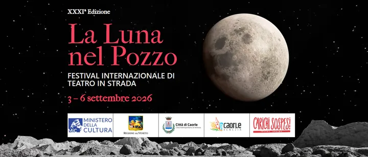

da ven 4 set a dom 6 set
La Luna nel Pozzo
Festival internazionale di teatro di strada con circo contemporaneo, acrobatica, clownerie, musica e spettacoli per famiglie.
 Indicazioni
Indicazioni
- Costi e prenotazioni
- Spettacoli a partecipazione libera · Nessuna prenotazione generale indicata
- Programma
- Programma e repliche pubblicati. Orari, piazze e durate ricavati dalle schede ufficiali; eventuali variazioni sull’app del festival.
- In caso di maltempo
- Gli avvisi e le eventuali variazioni di piazza sono pubblicati nell’app e sul sito del festival.
- Note
- Spettacoli in più piazze; domenica alcune repliche sono tradotte in LIS.
L’EVENTO
Descrizione completa
La trentunesima edizione de La Luna nel Pozzo trasforma calli, campielli e piazze di Caorle in un grande palcoscenico all’aperto. Compagnie internazionali propongono circo contemporaneo, acrobatica, teatro di figura, clownerie, breakdance, musica e performance di fuoco.
Gli spettacoli sono distribuiti in numerosi punti del centro storico, con ulteriori sedi a Ca’ Corniani, Porto Santa Margherita e San Giorgio di Livenza. La partecipazione è libera e molti titoli vengono replicati in piazze diverse durante la serata.
Il sito ufficiale pubblica il programma giorno per giorno e gli avvisi meteo. Per orientarsi tra gli spettacoli conviene scegliere in anticipo due o tre compagnie e controllare nell’app del festival orari e piazze aggiornati.
IL PROGRAMMA
Programma e orari
Repliche ordinate per orario, con piazza e durata. Il programma di venerdì, sabato e domenica è stato ricostruito dalle schede ufficiali degli spettacoli; gli appuntamenti dei primi due giorni sono una selezione. Gli avvisi meteo del festival possono modificare le repliche.
Mercoledì 2 settembre — anteprima acquisita
- 21:00 · Twist of Art, Richard Circus Entertainment — Piazza Libertà, San Giorgio di Livenza (40 min).
Giovedì 3 settembre — appuntamenti acquisiti
- 20:30 · Twist of Art — Piazza Papa Giovanni XXIII; replica alle 22:00.
- 20:30 · The Gipsy Marionettist — Campo Negroni; replica alle 22:15, con traduzione LIS.
- 20:30 · Flair Bartender Jonas — Rio Terrà, fronte Bafile; replica alle 22:20.
- 20:30 · Laboratorio delle bolle — Piazza Mercato.
- 21:00 · Cronos — Campo Oriondi.
- 21:10 · P.A.M.M. — Piazza Matteotti.
- 21:20 · Resta — Piazza Papa Giovanni XXIII; replica alle 22:50.
- 21:20 · Wait for… — Campo Negroni; replica alle 23:10.
- 21:20 · Electric Feel — Piazzetta Marchesan.
- 21:50 · Naufragata — Piazza Vescovado.
Venerdì 4 settembre
- 19:00 · Incontro con Rašid Nikolić sulla cultura romanì — Campo Oriondi (30 min)
- 20:30 · Street Sale, Los Colga-dos — Piazza Papa Giovanni XXIII (30 min)
- 20:30 · Flair Bartender Jonas, Jonas Liang — Rio Terrà, fronte Bafile (30 min)
- 20:30 · The Tamarros, Ambaradan: esibizione itinerante — da Piazza Vescovado a Piazza Sant’Antonio (45 min)
- 20:30 · Wait for…, Nando e Maila / Paolo Piludu — Campo Negroni (45 min)
- 20:30–23:30 · Nautilus, Collettivo Lambe Lambe — portico di Piazza Vescovado (microspettacoli di 3–5 min).
- 21:00 · Resta, Duo Ludilò — Piazza Sant’Antonio (30 min)
- 21:00 · P.A.M.M., Cie Zec — Campo Oriondi (70 min)
- 21:10 · Twist of Art, Richard Circus Entertainment — Piazza Papa Giovanni XXIII (40 min)
- 21:10 · Eh?!, Cía Flying Pikmis — Piazza Matteotti (45 min)
- 21:20 · Dance of the Flying Fire, Flare Performance — Piazzetta Marchesan (25 min)
- 21:30 · The Gipsy Marionettist, Rašid Nikolić — Campo Negroni (40 min)
- 21:40 · Il kit delle bolle, Fabio Saccomani — Piazza Sant’Antonio (30–45 min)
- 22:00 · Street Sale, Los Colga-dos — Piazza Papa Giovanni XXIII (30 min)
- 22:00 · The Tamarros, Ambaradan — Rio Terrà, fronte Bafile (45 min)
- 22:00 · Electric Feel, Cía Nom Provisional — Piazzetta Marchesan (40 min)
- 22:10 · Resta, Duo Ludilò — Piazza Sant’Antonio (30 min)
- 22:20 · Naufragata, Circo Zoé — Piazza Vescovado (55 min)
- 22:30 · Wait for…, Nando e Maila / Paolo Piludu — Campo Negroni (45 min)
- 22:40 · Twist of Art, Richard Circus Entertainment — Piazza Papa Giovanni XXIII (40 min)
- 22:50 · Flair Bartender Jonas, Jonas Liang — Rio Terrà, fronte Bafile (30 min)
- 22:50 · Il kit delle bolle, Fabio Saccomani — Piazza Sant’Antonio (30–45 min)
- 23:00 · Dance of the Flying Fire, Flare Performance — Piazzetta Marchesan (25 min)
- 23:20 · The Gipsy Marionettist, Rašid Nikolić — Campo Negroni (40 min)
- 23:20 · Cronos, Bardo Teatro Físico — Campo Oriondi (40 min)
Sabato 5 settembre
- 18:30 · Kostüm, Trio Les Triphasés — Piazza Matteotti (50 min)
- 19:00 · Incontro con Rašid Nikolić sulla cultura romanì — Campo Oriondi (30 min)
- 19:00 · Concerto One Eat One — portico di Piazza Vescovado (60 min)
- 20:30 · The Simon Show, Anima Company — Campo Negroni (35 min)
- 20:30 · Bath-flop, Barbara Probst — Rio Terrà, fronte Bafile (35 min)
- 20:30–23:30 · Nautilus, Collettivo Lambe Lambe — portico di Piazza Vescovado (microspettacoli di 3–5 min).
- 21:00 · Paris en fête, Will Street — Piazza Papa Giovanni XXIII (40 min)
- 21:00 · Embolic, Cía Pau Palaus — Campo Oriondi (45 min)
- 21:15 · Eh?!, Cía Flying Pikmis — Piazza Matteotti (45 min)
- 21:20 · The Gipsy Marionettist, Rašid Nikolić — Campo Negroni (40 min)
- 21:20 · Spettacolo di bolle, Fabio Saccomani — Piazzetta Marchesan (45 min)
- 21:50 · Nagual, Adriano Cangemi — Piazza Vescovado (40 min)
- 21:50 · Street Sale, Los Colga-dos — Piazza Papa Giovanni XXIII (30 min)
- 22:10 · The Simon Show, Anima Company — Campo Negroni (35 min)
- 22:10 · Dance of the Flying Fire, Flare Performance — Piazzetta Marchesan (25 min)
- 22:30 · Bath-flop, Barbara Probst — Rio Terrà, fronte Bafile (35 min)
- 22:30 · Paris en fête, Will Street — Piazza Papa Giovanni XXIII (40 min)
- 22:40 · Vortex, MagdaClan — Campo Oriondi (25 min)
- 22:45 · Spettacolo di bolle, Fabio Saccomani — Piazzetta Marchesan (45 min)
- 23:00 · The Gipsy Marionettist, Rašid Nikolić — Campo Negroni (40 min)
- 23:10 · Nagual, Adriano Cangemi — Piazza Vescovado (40 min)
- 23:20 · Street Sale, Los Colga-dos — Piazza Papa Giovanni XXIII (30 min)
- 23:30 · Dance of the Flying Fire, Flare Performance — Piazzetta Marchesan (25 min)
- 00:00 · Vortex, MagdaClan — Campo Oriondi (25 min; notte fra sabato 5 e domenica 6).
Domenica 6 settembre
- 18:00 · The Simon Show, Anima Company — Campo Negroni (35 min)
- 18:00 · Bath-flop, Barbara Probst — Rio Terrà, fronte Bafile (35 min)
- 18:00 · Paris en fête, Will Street — Piazza Papa Giovanni XXIII (40 min)
- 18:50 · Kostüm, Trio Les Triphasés — Piazza Matteotti (50 min)
- 18:50 · Vortex, MagdaClan — Piazza Papa Giovanni XXIII (25 min)
- 18:50 · The Gipsy Marionettist, Rašid Nikolić, con traduzione LIS — Campo Negroni (40 min)
- 20:30 · The Simon Show, Anima Company — Campo Negroni (35 min)
- 20:30 · Spettacolo di bolle, Fabio Saccomani — Piazza Matteotti (45 min)
- 21:00 · Paris en fête, Will Street — Piazza Papa Giovanni XXIII (40 min)
- 21:00 · Embolic, Cía Pau Palaus — Campo Oriondi (45 min)
- 21:20 · Bath-flop, Barbara Probst — Rio Terrà, fronte Bafile (35 min)
- 21:20 · The Gipsy Marionettist, Rašid Nikolić, con traduzione LIS — Campo Negroni (40 min)
- 21:50 · Nagual, Adriano Cangemi — Piazza Vescovado (40 min)
- 22:00 · Paris en fête, Will Street — Piazza Papa Giovanni XXIII (40 min)
- 22:00 · Spettacolo di bolle, Fabio Saccomani — Piazza Matteotti (45 min)
- 22:30 · Vortex, MagdaClan — Campo Oriondi (25 min)
- 23:00 · Nagual, Adriano Cangemi — Piazza Vescovado (40 min)
Altre attività diffuse
- Allestimenti artistici e tatuaggi temporanei nel centro storico.
- Marco Rodomonti realizza ritratti in Rio Terrà Bafile, da giovedì a domenica.
INFORMAZIONI UTILI
Prima di partire
- Gli spettacoli si sovrappongono: considera il tempo per raggiungere la piazza successiva.
- La replica di Vortex alle 00:00 è nella notte tra sabato 5 e domenica 6.
- Domenica le repliche di Rašid Nikolić delle 18:50 e 21:20 sono indicate con traduzione LIS.
- L’app e il sito ufficiale pubblicano avvisi meteo e modifiche del programma.
- Contatti: Sezione Credits e contatti del sito ufficiale
ORGANIZZAZIONE